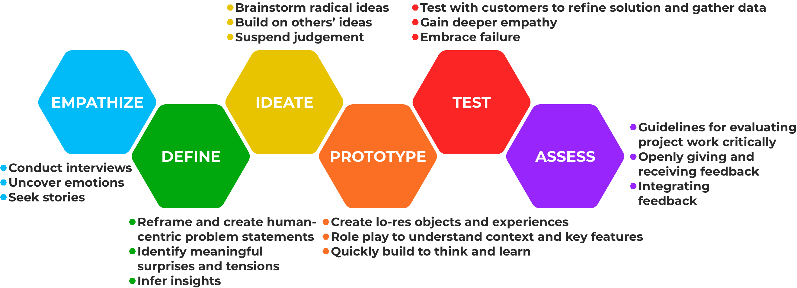

MyStudentHouse.
Overview
As a student, I experienced many struggles as I searched countless websites trying to find a suitable student house. When you search for a new student lease, it should be fun and easy!
For this project, I wanted to create an all-in-one platform to make finding student housing more enjoyable and convenient.
Role
User Experience & User Interface Designer
Project Proposal, User Research, User Surveys, User Personas, Platform Ideation, Creative Brief, Style Guide, Prototyping
Software: Sketch, InVision, Photoshop
May-July 2020
Background
Students are subject to experience many struggles navigating countless websites trying to find a suitable student house. When searching for a new student lease, it should be fun and easy! MyStudentHouse creates an all-in-one platform to make finding student housing more enjoyable and convenient.
EMPATHIZE
The Challenge
Students should be able to view open and available student living options and have access to information such as location, accommodations, and other important factors at their fingertips, in one convenient platform when searching for student living accommodations.
The process of acquiring a suitable student house can take months to confirm which can be a stressful task for students. Some of the stressful parts of acquiring suitable housing includes lack of information, lack of resources, and inefficient response time from landlords/hosts.
MyStudentHouse makes finding the perfect student living arrangement seamless.
DEFINE
The Design Process
.
IDEATE
Target Market Research
Through personal knowledge and through word of mouth from colleagues, many students struggle and stress over being unable to find a single platform that had all listings and offered all the same filters to conveniently find a student house. This perpetuated this need of a single platform that provides the desired concept, by identifying this concept as integral to filling an empty market space.
Based on statistics found from 2015, the average age at graduation for College students is 26 years old and 25 for University. With this research the conclusion of the target demographic is ages 17-26. The secondary demographic would be composed of parents ranging from 40-55 years old.
This confirmed why a platform such as this project would be beneficial and viable.
Displayed below are a few key questions from the survey. The graphs and questions depict the responses from the students who completed the survey.
Qestion 6:

Results:
This question exemplified the importance of this problem space as 64.7% of these students have encountered troubles finding/viewing housing which solidifies the project idea and provides clear feedback that this project has a market.
Qestion 7:

Results:
This question was aimed at acquiring feedback on the importance of listing pictures. The target was to validate whether or not images of the student houses impact the decision of a renter. The conclusion identified that listing display photos are essential to communicate the listing effectively.
User Personas
Creating user personas was a crucial step in the development of MyStudentHouse as it helped to define the target audience for the platform and inform design decisions. By creating detailed profiles of the target users, including their demographics, needs, pain points, and behaviors, I was able to gain a better understanding of who I was designing for and what their needs were. This helped to ensure that the platform was meeting the needs of its intended users and providing a user experience that was tailored to them.
User personas also helped to guide the user research process by providing clear guidelines for who to interview and what information to gather. Additionally, it helped to stay focused on the needs of the target users throughout the development process, and to make sure that the features and design decisions were aligned with their needs.
Simplified:


Style Guide
In order to keep the design language of my project consistent, I made sure to create a strong and intensive Style Guide. As the project progressed I also made sure to update the Style Guide with any necessary updates.
This is the finalized exported Style Guide:

PROTOTYPE
Low Fidelity Paper Prototype
The initial sketches for the layout of the interface resulted in a focus on a mobile interface, while also creating a web view from one or two of the sketches.
These sketches it displays all the main features and pages of the application.

Low Fidelity Digital Prototype
After creating a Style Guide and low fidelity paper prototype I designed high fidelity wireframes based on my sketches.

High Fidelity Digital Prototype
Mobile and web interfaces are crucial for the success of MyStudentHouse as they provide users with the flexibility and convenience to access the platform from any device, at any time. This is especially important for students who may not have a lot of free time or may be constantly on the move. With a mobile app, users can easily browse apartments and contact landlords while on the go, and with a web interface, they can access the platform from their laptops or desktop computers. Additionally, having both a mobile and web interface allows for a wider reach, as users can choose the platform that best suits their needs. Overall, providing mobile and web interfaces for MyStudentHouse not only enhances the user experience but also increases the accessibility and reach of the platform.
Mobile

Web

TEST
User Testing
User testing and iterating on feedback is essential for creating a successful platform like MyStudentHouse. User testing allowed me to gain valuable insights into how real users interact with the platform and identify any pain points or areas for improvement. This information can then be used to make informed design decisions and iterate on the interface and functionality of the platform. By constantly gathering feedback and making changes based on it, I was able to ensure that the platform met the needs of its users and provided a seamless and enjoyable experience.
Furthermore, iterating on feedback also helped to increase user engagement and satisfaction, which in turn can lead to increased adoption and user retention. By actively seeking and responding to feedback, I was able to demonstrate to the users that we value their input and the dedication to creating a platform that meets their needs.
In conclusion, user testing and iterating on feedback was the key element in the development of MyStudentHouse, it allows to create a user-centered platform that is tailored to the needs of its users, and to continuously improve the user experience.
Below are some examples of the changes that were implemented after testing in order to iterate and improve the user experience.
Iteration:


ASSESS
Results and Reflection
Creating MyStudentHouse, a web and mobile based platform for students shopping for rental apartments, was an exciting and challenging experience. The focus on user experience design was at the forefront of every decision I made, from the initial concept phase to the final product. This included conducting user research to understand the needs and pain points of our target audience, prototyping and testing various interface designs, and iterating based on feedback. I also made sure to include key features such as the ability to easily contact landlords or roommates, filtering and searching options, to make the process as smooth and seamless as possible for the user.
Overall, it was a rewarding experience to see our user-centered approach come to fruition in the form of a functional and user-friendly platform.
The results of the website redesign should be quantifiable by:
-Locating Student Housing with Ease
-Connecting Students and Landlords
-Providing Students with all Necessary Information
-Improve Student Life Outside of School